Cредняя энергия, при которой появляются нейтроны в результате деления ядра, составляет величину . Изменить свою энергию нейтрон может только в результате реакции рассеяния. Поскольку реакция неупругого рассеяния имеет пороговый характер (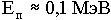), то в пределах широкой энергетической области, от 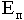 до тепловых энергий, замедление нейтронов происходит за счет реакции упругого расеяния. Рассмотрим акт упругого рассеяния на примере "лобового" удара нейтрона с ядром, находящимся в состоянии покоя (см.рис.1.12).
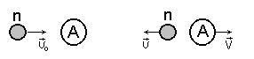
Рис. 1.12. Схема упругого рассеяния "в лоб"
При абсолютно упругом ударе выполняются законы сохранения:
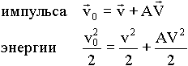,
(2)
| где | 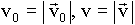 - модуль скорости нейтрона до и после столкновения соответственно ; |
| 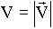 - модуль скорости ядра после столкновения; |
| A - масса ядра (в атомных единицах массы); |
| 1 - масса нейтрона. |
Решая систему (2), нетрудно получить соотношение между скоростью нейтрона до и после соударения:
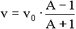.
Отношение кинетической энергии нейтрона после столкновения к энергии до столкновения есть:
 .
.
Из этого выражения очевидно, что отношение 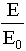 тем меньше, чем меньше A. При A=1 (рассеяние на водороде) 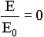, т.е. нейтрон при "лобовом" столкновении теряет всю свою энергию. Однако, случай "лобового" столкновения является лишь частным случаем упругого рассеяния. Если в результате акта взаимодействия нейтрон и ядро разлетаются под углом (см.рис.1.13), то потеря энергии зависит от угла рассеяния. Можно показать, что нейтрон после столкновения с равной вероятностью будет иметь энергию в интервале от  до 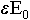. Величина 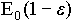 называется ступенькой замедления. При этом средняя потеря энергии нейтрона
до 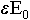. Величина 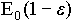 называется ступенькой замедления. При этом средняя потеря энергии нейтрона
 ,
,
т.е. нейтрон при столкновении в среднем теряет одну и ту же долю первоначальной энергии. Обычно рассматривают такую величину как средняя потеря логарифма энергии:
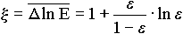.
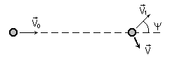
Рис. 1.13. Схема упругого рассеяния под углом
Удобство введения этой величины обусловлено тем, что 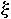 зависит лишь от массового числа ядра. Используя величину , можно легко рассчитать среднее число столкновений нейтрона с ядрами, которые приводят к замедлению от энергии  до энергии E. Например, среднее число столкновений, необходимых нейтрону, чтобы замедлиться от энергии деления 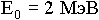 до тепловой энергии , есть
до энергии E. Например, среднее число столкновений, необходимых нейтрону, чтобы замедлиться от энергии деления 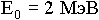 до тепловой энергии , есть
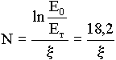.
Из приведенной ниже таблицы видно, какое количество столкновений в среднем необходимо нейтрону, чтобы замедлиться из быстрой области энергий в тепловую.
Таблица 1.2
Константы, характеризующие замедление нейтронов
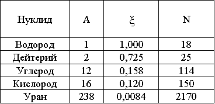
Однако, выбирать тип замедлителя, исходя только из величины  , было бы опрометчиво, важна еще вероятность расеяния на данном веществе и величина его сечения поглощения. Вышеперечисленные факторы учитывает комплекс 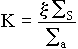 - коэффициент замедления, где
, было бы опрометчиво, важна еще вероятность расеяния на данном веществе и величина его сечения поглощения. Вышеперечисленные факторы учитывает комплекс 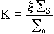 - коэффициент замедления, где  называется замедляющей способностью. Чем больше K, тем лучше замедлитель. С точки зрения нейтронно-физических процессов наилучшим замедлителем является тяжелая вода, затем следует графит и, наконец, обычная вода.
называется замедляющей способностью. Чем больше K, тем лучше замедлитель. С точки зрения нейтронно-физических процессов наилучшим замедлителем является тяжелая вода, затем следует графит и, наконец, обычная вода.
Рассмотрим теперь, как формируется спектр нейтронов (т.е. распределение замедляющихся нейтронов по энергиям) при замедлении на водороде (это самый простой случай).
Пусть в единице объема в единицу времени рождается нейтронов с энергией  . Рассмотрим баланс нейтронов в интервале dE около энергии E (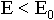) (рис.1.14).
. Рассмотрим баланс нейтронов в интервале dE около энергии E (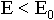) (рис.1.14).

Рис. 1.14. Энергетический баланс нейтронов
Число нейтронов, прибывающих в единицу времени в этот интервал, складывается из двух составляющих:
1. за счет однократного рассеяния нейтронов источника при энергии 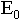;
2. за счет рассеяния нейтронов в интервалах типа dE, лежащих выше энергии E, но ниже (т.е. 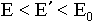).
Если - число нейтронов, испускаемых источником при энергии , то ясно, что раньше или позже они испытают соударения с ядрами среды (так как по условию среда бесконечна, следовательно, утечки нейтронов за ее пределы нет). Однако, не каждое соударение приводит к реакции рассеяния. При наличии поглощения вероятность нейтрону испытать именно рассеяние равна отношению
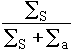.
Следовательно, число нейтронов источника, испытавших рассеяние в результате первого столкновения, есть величина
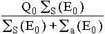 (Обозначим 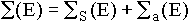).
Вероятность того, что в результате первого рассеяния нейтроны попадут в интервал энергий dE около E, есть 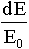, так как при рассеянии на водороде (A = 1) нейтроны с равной вероятностью приобретают энергию в пределах ступеньки замедления 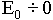. Таким образом, за счет однократного рассеяния нейтронов источника в интервал dE около E каждую секунду будет попадать число нейтронов
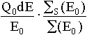.
Из интервала dE около E за счет рассеяния ежесекундно уходит 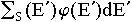 нейтронов. Поскольку в результате рассеяния нейтроны будут иметь энергию в интервале 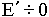 с равной вероятностью, то вероятность попасть в интервал dE будет 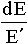. Значит, в результате многократного рассеяния нейтронов выше энергии E в интервал dE попадет число нейтронов, равное
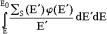.
Если ввести обозначение
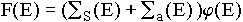,
то это выражение можно привести к виду
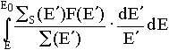.
Таким образом, общая прибыль нейтронов в интервал dE около E составляет величину
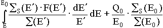.
Убыль нейтронов из интервала dE около E осуществляется за счет поглощения 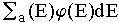 и рассеяния 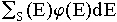. Поскольку рассматривается равновесный процесс замедления, то скорость убыли должна равняться скорости прибыли:
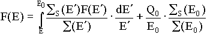.
(3)
Уравнение (3) носит название уравнения замедления. Его решения легко получить аналитически, если продифференцировать по E левую и правую части:
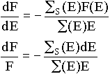;
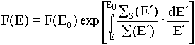.
Из выражения (3) получим
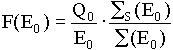.
Если учесть, что 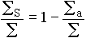 в показателе экспоненты, то
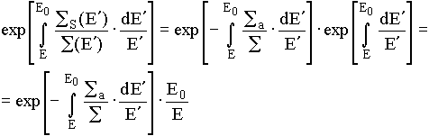.
Окончательно получим:
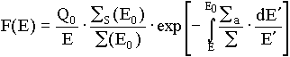.
(4)
Если поглощение мало (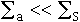), то выражение (4) принимает вид:
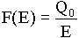.
Таким образом, энергетическое распределение нейтронов при замедлении на водороде имеет вид:
без поглощения:
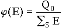(спектр Ферми);
с поглощением:
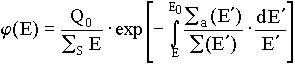.
Из сравнения этих двух формул понятно, что сомножитель
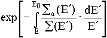
имеет смысл вероятности избежать поглощения при замедлении.
Если замедление происходит на произвольных ядрах среды, то можно показать, что спектр нейтронов описывается выражением:
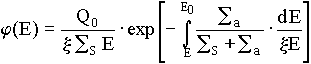.
Поскольку в области замедления сечения захвата малы за исключением резонансного поглощения на ядрах топлива, то величина
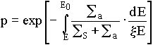
носит название вероятности избежать резонансного захвата.